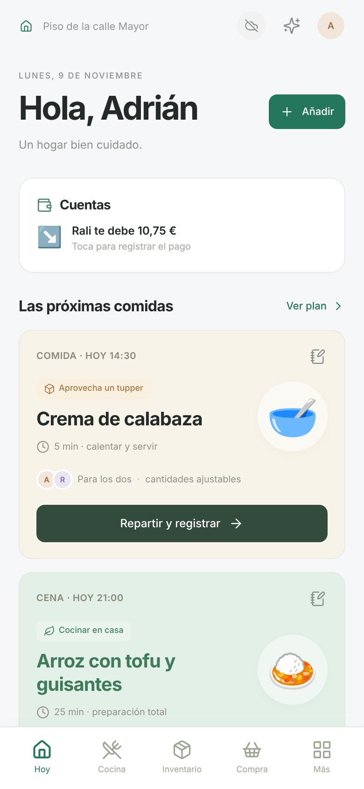

Hoy
Lo importante de un vistazo: lo que toca revisar, cuentas pendientes, las próximas comidas, los tuppers que hay que gastar primero y lo que caduca pronto.
Con Añadir apuntas cualquier cosa: una compra, un gasto, algo para la lista, un kit…
